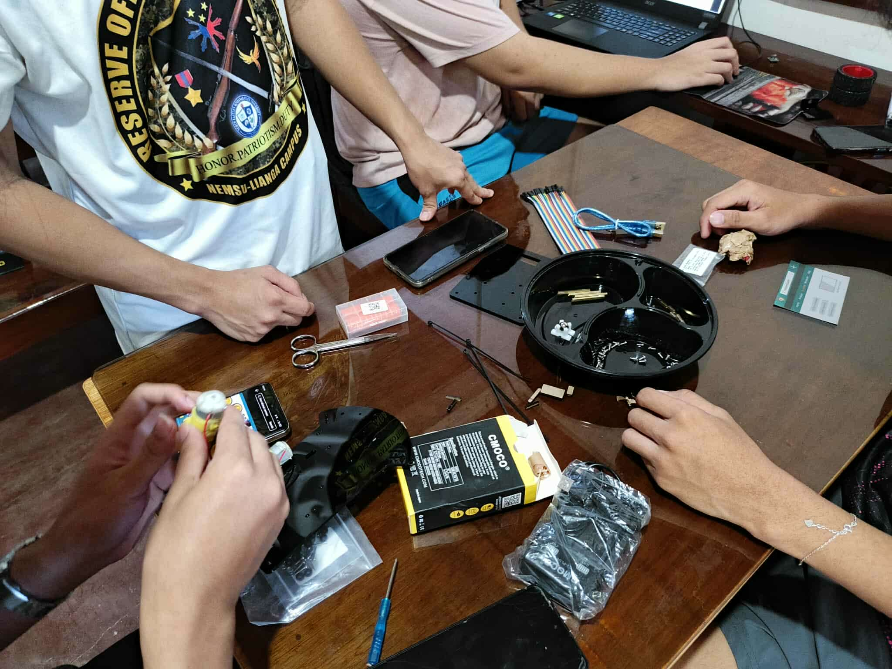
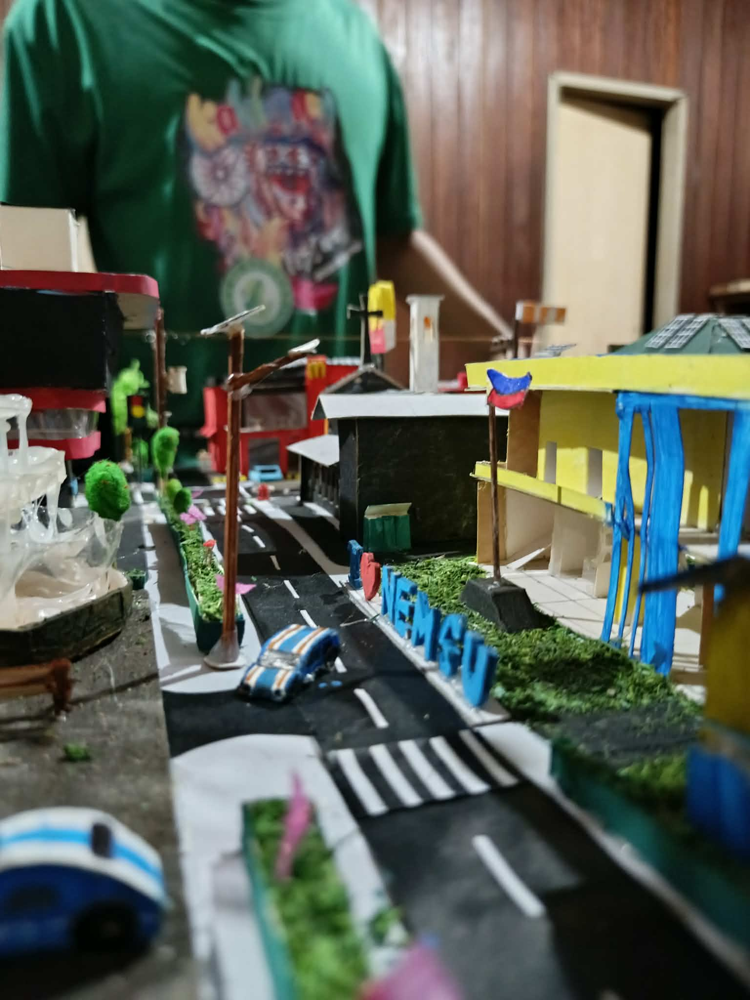
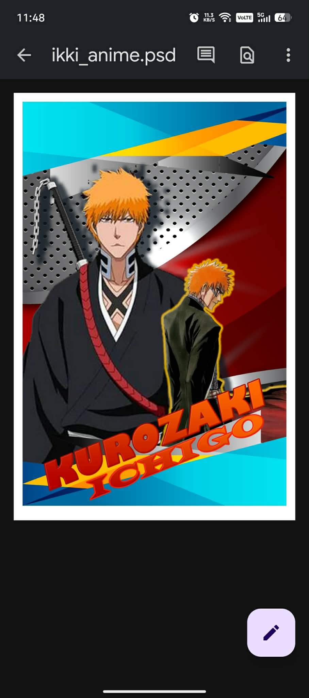
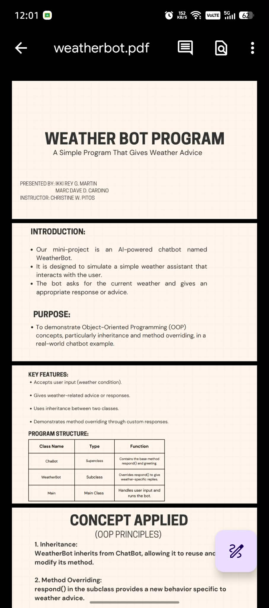
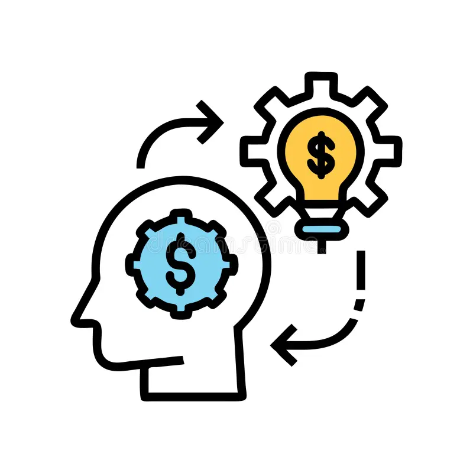

Welcome to my professional portfolio. Explore my projects and learn more about my skills in programming and development.
I am a dedicated Computer Science student who is passionate about learning and improving my technical skills. I enjoy exploring different areas of programming, from understanding algorithms to writing and analyzing code. I believe that growth comes from continuous practice, curiosity, and staying consistent even when things get challenging. Aside from academics, I am also interested in motorcycles and technical modifications, which reflect my hands-on mindset and attention to detail. I like understanding how things work whether in software systems or mechanical setups. I value practical knowledge, problem-solving, and applying what I learn in real-world situations. I am still learning, but I am committed to becoming better every day. I see every mistake as an opportunity to improve and every challenge as a chance to grow.

Embedded Systems

Contemporary World

Multimedia

Object Oriented Programming

Enteprenuiral mind
If you want to get in touch, you can reach me at ikkimartin@email.com